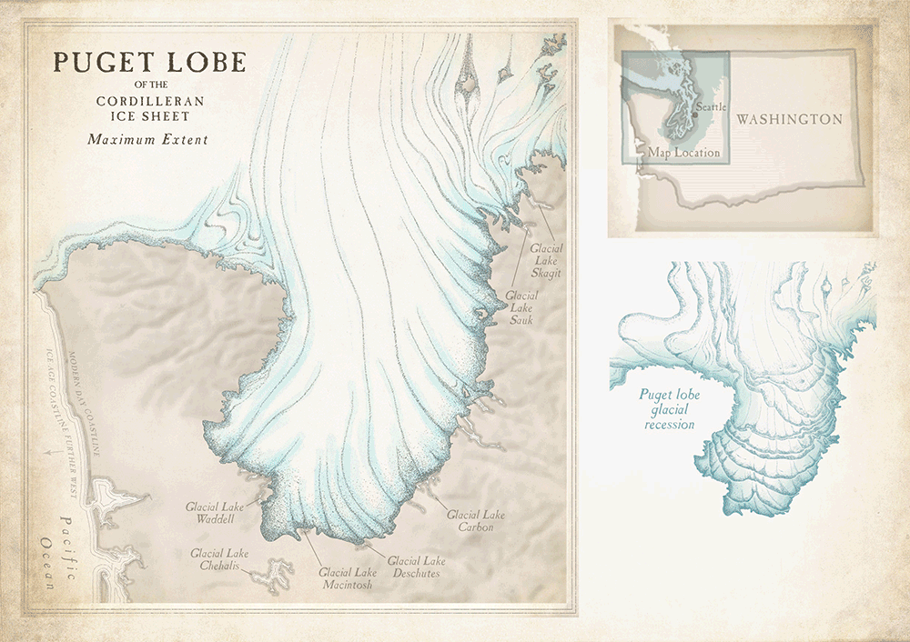

Lake Sammamish
History
(Above: The Recession of the Puget Ice Lobe and the Formation of Lake Sammamish)
Lake Sammamish is a remnant of history. The Lake is located in a glacial trough that was formed during the previous ice age. Parts of the ice sheet extended South through Puget Sound, where they formed both Lake Sammamish and Lake Washington. Lake Sammamish was once deeper than it is now, as there is a river delta dumping sand and gravel into the lake. If the houses and infrastructure of Sammamish existed back then, they would all be underwater!
Lake Sammamish also contains the remains of many landslides. The clay that laid below the glaciers was slippery, causing many landslides to occur. Some we so big that entire forests were dragged into the Lake! If you kayak northwest to Greenwood Point, you can see some trees sticking out of the water. One of the forests was submerged over a thousand years ago when a large earthquake occurred. That’s such a long time!
Videos
Diving off Issaquah Creek in Lake SammamishLake Sammamish - North Kayaking in 4K UHD with Drone Aerials
Aerial Views of Lake Sammamish | Near Seattle Washington
Issues

In just 100 years, the lake has experience drastic change, not all of which is beneficial. All sorts of waste are ending up in the Lake, such as:
- Dissolved bacteria
- Chemicals from sewage treatment
- Pollution from invasive plants and bulldozed soil
- Urbanization waste
Recent Pollution Data
| Pollutant | Year | Amount (µg/liter) |
|---|---|---|
| Phosphorus | 1968 | 30-35 |
| Phosphorus | 1973 | 15-20 |
| Phosphorus | 1978 | 13 |
| Phosphorus | 1996 | 22 |
Pollution has begun to increase...
Map of Lake Sammamish